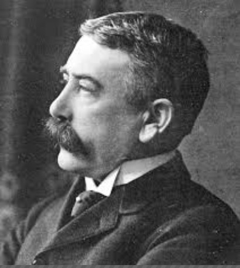

- Ferdinand de Saussure

Ferdinand de Suassure(26 Nov 1857 - 22 FEB 1931) was a Swiss linguistic, semiotican and philosopher.
- Structural linguistics
- Langue and Parole
- Semiotics
- Georgy Zhukov
Georgy Konstantinovich Zhukov(1 DEC 1896 - 18 JUN 1974) was a Soviet general and Marshal of the Soviet Union.